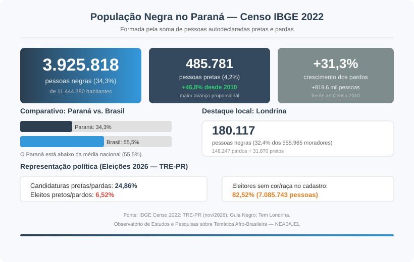

Dados e indicadores — População negra no Paraná
Contextualização a partir do Censo IBGE 2022 e dados eleitorais de 2026:

Fontes
- IBGE — Censo Demográfico 2022 (população por cor ou raça no Paraná).
- TRE-PR — dados eleitorais de 2026 (candidaturas e eleitos por cor/raça).
- Guia Negro — análise comparativa dos percentuais estaduais vs. nacional.
- Tem Londrina — levantamento do Censo 2022 para o município de Londrina.